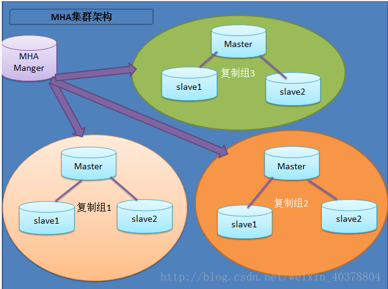

MySQL高可用解决方案
MMM:
Multi-Master Replication Manager for MySQL，Mysql主主复制管理器是一套灵活的脚本程序，基于perl实现，用来对mysql replication进行监控和故障迁移，并 能管理mysql Master-Master复制的配置(同一时间只有一个节点是可写的)
[官网]http://www.mysql-mmm.org
https://code.google.com/archive/p/mysql-master-master/downloads
MHA：
Master High Availability，对主节点进行监控，可实现自动故障转移至其它从节点；通过提升某一从节点为新的主节点，基于主从复制实现，还需要客户端配合实现，目前MHA主要支持一主多从的架构，要搭建MHA,要求一个复制集群中必须最少有三台数据库服务器，一主二从，即一台充当master，一台充当备用master，另外一台充当从库，出于机器成本的考虑，淘宝进行了改造，目前淘宝TMHA已经支持一主一从
[官网]https://code.google.com/archive/p/mysql-master-ha/
Galera Cluster：
wsrep(MySQL extended with the Write Set Replication)通过wsrep协议在全局实现复制；任何一节点都可读写，不需要主从复制，实现多主读写
GR（Group Replication）
MySQL官方提供的组复制技术(MySQL 5.7.17引入的技术)， 基于原生复制技术Paxos算法
MHA
实现MHA的过程

MHA Manager可以单独部署在一台独立的机器上管理多个master-slave集群，也可以部署在一台slave节点上。
MHA Node运行在每台MySQL服务器上，MHA Manager会定时探测集群中的master节点，当master出现故障时，它可以自动将最新数据的slave提升为新的master，然后将所有其他的slave重新指向新的master。
整个故障转移过程对应用程序完全透明。
在MHA自动故障切换过程中，MHA试图从宕机的主服务器上保存二进制日志，最大程度的保证数据的不丢失，但这并不总是可行的。
例如，如果主服务器硬件故障或无法通过ssh访问，MHA没法保存二进制日志，只进行故障转移而丢失了最新的数据。
使用MySQL 5.5的半同步复制，可以大大降低数据丢失的风险。
MHA可以与半同步复制结合起来。如果只有一个slave已经收到了最新的二进制日志，MHA可以将最新的二进制日志应用于其他所有的slave服务器上，因此可以保证所有节点的数据一致性。
MHA服务有两种角色，MHA Manager(管理节点）和MHA Node(数据节点）：
MHA Manager:通常单独部署在一台独立机器上管理多个master/slave集群，每个master/slave集群称作一个application;
MHA node:运行在每台MYSQL服务器上（master/slave/manager),它通过监控具备解析和清理logs功能的脚本来加快故障转移
MHA组件
常见工具
Manager节点：
masterha_check_ssh :MHA依赖的ssh环境监测工具
masterha_check_repl: MYSQL复制环境检测工具；
masterga_manager: MHA 服务主程序
masterha_check_status: MHA 运行状态探测工具；
masterha_master_monitor:MYSQL master节点可用性监测工具；
masterha_master_swith:master节点切换工具；
masterha_conf_host:添加或删除配置的节点；
masterha_stop:关闭MHA服务的工具。
Node节点：
save_binary_logs:保存和复制master的二进制日志；
apply_diff_relay_logs:识别差异的中继日志事件并应用于其他slave；
filter_mysqlbinlog:去除不必要的ROLLBACK事件（MHA已不再使用这个工具
purge_relay_logs:清除中继日志（不会阻塞SQL线程）
自定义扩展：
secondary_check_script:通过多条网络路由检测master的可用性；
master_ip_failover_script:更新application使用的masterip；
report_script:发送报告
init_conf_load_script:加载初始配置参数；
master_ip_online_change_script:更新master节点ip地址；
实现MHA的过程
前提条件
1.各主机基于ssh-key验证
2.各主机的时间需要同步
主节点
[mysqld]
server-id=1
log-bin=/PATH/LOG_BIN_FILENAME
skip_name_resolve=ON
innodb_file_per_table = ON
1. 授权MHA账号以实现控制服务器
mysql> GRANT REPLICATION SLAVE,REPLICATION CLIENT ON *.* TO 'repluser'@'HOST' IDENTIFIED BY 'replpass'
在所有MYSQL节点授权拥有管理权限的用户可在本地网络中有其他节点上远程访问。当然，此时仅需要且只能在master节点运行类似如下。
mysql> GRANT ALL ON *.* TO ‘mhaadmin’@’172.16.252.%’ IDENTIFIED BY ‘mhapass’;
MariaDB [(none)]>SHOW MASTER STATUS
从节点配置
[mysqld]
server-id = 2 #复制集群中的各节点的id均必须唯一；
relay-log = relay-log
log-bin
read_only = ON
relay_log_purge = 0
skip_name_resolve = ON
innodb_file_per_table = ON
MariaDB [(none)]>CHANGE MASTER TO MASTER_HOST=’master ip′,MASTER_USER=’repluser’,MASTER_PASSWORD=’replpass’,MASTER_LOG_FILE=’master-log.000003′,MASTER_LOG_POS=498;
MariaDB [(none)]> START SLAVE;
MariaDB [(none)]> SHOW SLAVE STATUS\G
安装配置MHA
Manager 节点需要为每个监控的master/slave集群提供一个专用的配置文件，而所有的master/slave集群也可共享全局配置。全局配置文件默认为/etc/masterha_default.cnf，其为可选配置。如果仅监控一组master/slave集群，也可直接通过application的配置来提供各服务器的默认配置信息。而每个application的配置文件路径为自定义。
a、准备基于SSH互信通信环境：
b、安装MHA
除了源码包，MHA官方也提供了rpm格式的程序包
vim /etc/mastermha/app1.cnf
[server default]
user=mhauser
password=magedu
manager_workdir=/data/mastermha/app1/
manager_log=/data/mastermha/app1/manager.log
remote_workdir=/data/mastermha/app1/
ssh_user=root
repl_user=repluser
repl_password=magedu
ping_interval=1
[server1]
hostname=192.168.8.17
candidate_master=1
[server2]
hostname=192.168.8.27
candidate_master=1
[server3]
hostname=192.168.8.37
测试启动
检测各节点间ssh互信通信配置是否Ok
masterha_check_ssh --conf=/etc/mha/mysqlcluster1.cnf
检查管理的MySQL复制集群的连接配置参数是否OK
masterha_check_repl --conf=/etc/mha/mysqlcluster1.cnf
启动
masterha_manager --conf=/etc/mha/mysqlcluster1.cnf
测试故障转移
(1)在master节点关闭mariadb服务,模拟主节点数据崩溃
#killall -9 mysqld mysqld_safe
#rm -rf /var/lib/mysql/*
(2)在manager节点查看日志：
/data/mastermha/app1/manager.log
注意，故障转移完成后，manager将会自动停止，此时使用masterha_check_status命令检测将会遇到错误提示，如下所示：
#masterha_check_status –conf=/etc/masterha/app1.cnf
XXX is stopped(:NOT_RINNING).
Galera Cluster
特点
多主架构：真正的多点读写的集群，在任何时候读写数据，都是最新的
同步复制：集群不同节点之间数据同步，没有延迟，在数据库挂掉之后，数据不会丢失
并发复制：从节点APPLY数据时，支持并行执行，更好的性能
故障切换：在出现数据库故障时，因支持多点写入，切换容易
热插拔：在服务期间，如果数据库挂了，只要监控程序发现的够快，不可服务时间就会非常少。在节点故障期间，节点本身对集群的影响非常小
自动节点克隆：在新增节点，或者停机维护时，增量数据或者基础数据不需要人工手动备份提供，Galera Cluster会自动拉取在线节点数据，最终集群会变为一致
对应用透明：集群的维护，对应用程序是透明的
工作工程
Galera Cluster官方文档：
http://galeracluster.com/documentation-webpages/galera-documentation.pdf
http://galeracluster.com/documentation-webpages/index.html
https://mariadb.com/kb/en/mariadb/getting-started-with-mariadb-galera-cluster/
Galera Cluster包括两个组件
Galera replication library (galera-3)
WSREP：MySQL extended with the Write Set Replication
WSREP复制实现：
PXC：Percona XtraDB Cluster，是Percona对Galera的实现
MariaDB Galera Cluster
参考仓库：
https://mirrors.tuna.tsinghua.edu.cn/mariadb/mariadb-5.5.59/yum/centos7-amd64/
注意：都至少需要三个节点，不能安装mariadb-server
1. 配置repo源
cat > /etc/yum.repos.d/galera-cluster <<EOF
[galera]
name="galera-cluster"
baseurl=https://mirrors.tuna.tsinghua.edu.cn/mariadb//mariadb-10.0.37/yum/centos74-amd64/
enable=1
gpgcheck=0
EOF
2. 使用yum install MariaDB-Galera-server安装
3. 在各节点配置vim /etc/my.cnf.d/server.cnf
[galera]
wsrep_provider=/usr/lib64/galera/libgalera_smm.so
wsrep_cluster_address="gcomm://192.168.56.81,192.168.56.82,192.168.56.83"
binlog_format=row
default_storage_engine=InnoDB
innodb_autoinc_lock_mode=2
bind-address=0.0.0.0
4. 首次启动，需初始胡集群，在其中一个节点执行以下命令
/etc/init.d/mysql start --wsrep-new-cluster
5. 正常启动其它节点
service mysql start
查看集群中相关系统变量和状态变量
SHOW VARIABLES LIKE 'wsrep_%‘;
SHOW STATUS LIKE 'wsrep_%‘;
SHOW STATUS LIKE 'wsrep_cluster_size‘;